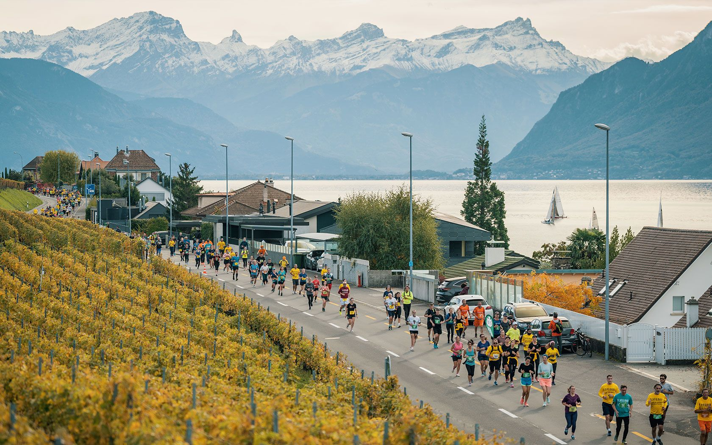

Inoffizielles Konzept — exploratorisches Mockup auf ehrenamtlicher Basis
DE
Menu

Läuferinfo
Zeiten, Startnummern, Taschen, Anreise.
Photo : Lausanne Marathon

Zeiten, Startnummern, Taschen, Anreise.
Photo : Lausanne Marathon